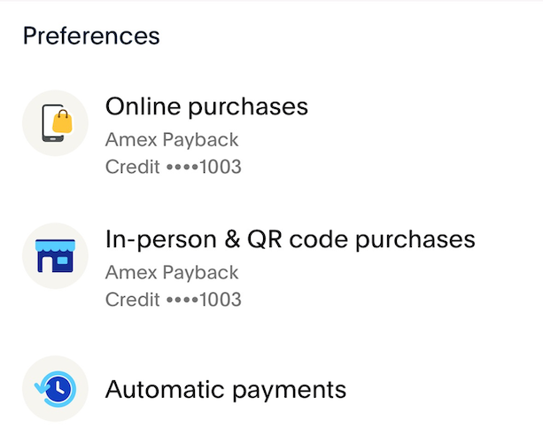

Choosing your best ally
to multiply your miles and benefits.

Credit Cards
Credit cards are excellent tools to help you accumulate more miles and even multiply your benefits while traveling. Whether reserving hotels, renting cars, or spending during your trips.
A difference many Brazilians encounter in other countries is the lower acceptance and use of credit cards, but there are important tips here to prevent you from losing your card points even in places where usage is more restricted.
Who are Credit Cards for?
The first concept we need to establish here is that there are credit cards for every budget, and all of them can help you significantly, sometimes in different areas, but it's always possible to make the most of their benefits.
And no, you don't need to be wealthy and have a huge income to get a card that accumulates points.
As a traveler, your focus is to use a credit card that brings you benefits for better and more frequent
travels, so focusing on the right things makes a big difference.
Accumulating miles will help you much more than gaining access to VIP lounges just for Instagram likes.
ALWAYS pay your credit card bill in full. Credit card interest rates are exorbitant and can jeopardize your financial health.
Common types of Credit Cards
 When it comes to credit cards with a focus on miles or travel benefits, we can categorize them as follows:
When it comes to credit cards with a focus on miles or travel benefits, we can categorize them as follows:
- Credit cards issued by airlines.
- Credit cards issued by banks, with the possibility to earn points in airline programs.
- Credit cards from hotel groups that generate points and offer transfers to airline miles.
- Credit cards issued by major stores, with their own loyalty program, but with partnerships for transferring points to airline miles.
Of course, these options greatly depend on your local market, the airlines in your country, and the stores and banks they are partnered with.
The examples here are mostly focused on Europe, but the concepts are the same for any country.
Insurances
An extremely important aspect related to credit cards is the insurance coverage they offer.
As a traveler, the last thing you want is to be on the other side of the world and have headaches due
to travel-related issues.
The main insurances you should look for in a credit card:
- International Health Insurance: in case you fall ill or get injured and need medical treatment and/or hospitalization.
- Flight Cancellation Insurance: if your flight gets canceled and you need to stay longer or even buy a ticket from another airline. Check the total amount covered by the card.
- Lost Luggage Insurance: You've arrived in Thailand, but your bags are in Canada. Buying clothes, toiletries, etc., will be reimbursed.
- Travel Assistance Insurance: If you need legal assistance, translation services, etc.
Always read all the regulations and rules of your card regarding insurance; the fine print is of utmost importance to understand what to do and what coverage you are entitled to.
How to accumulate Miles with your Credit Card
It might seem like a straightforward task, but here are some additional tips to maximize your card's usage and accumulate even more miles in your daily life:
- Attempt to put as many of your expenses on your credit card as possible.
- Register all your online accounts to use your card, or utilize a service like PayPal to centralize all online expenses and add your card as the primary payment method within PayPal or any other platform.
- PayPal is one of the few payment platforms that accept American Express cards.
- If you have a low-acceptance Amex card, consider having a second card, like Visa or Mastercard, that also earns miles/points.
- Research the history of Welcome Bonus promotions for your card; in some cases, it's worthwhile to wait a few months for a new promotion.
- Refer friends and family who can also benefit from the same card as yours to sign up using your referral link, allowing you to earn referral points.
- Pay your everyday bills using your credit card (rent, utilities, taxes, etc.).
What's the difference between Welcome Bonus and Referral Bonus?
Welcome Bonus
Also known as the Welcome Bonus, this is a significant offer provided by credit card issuers as an incentive to
choose their card over competitors'.
These bonuses can include substantial amounts of miles, values to be spent using the card with "no need to
pay," access to VIP lounges, and more.
One of the most attractive aspects is the bonus miles offer, often numbering in the tens of thousands
(e.g., 40,000 miles), but occasionally, once or twice a year, companies provide larger promotions with total
miles that easily cover a round-trip long-haul flight.
You need to keep an eye on the card's website you're interested in and research previous promotions to know
what values are usually offered. Note that this type of offer depends on various market conditions and other
variables, so it's not a guaranteed occurrence.
Often, this welcome bonus is only credited if you follow certain rules, like not canceling the card for 6 months, not missing payments, not having applied for another card from the same company within 18 months, etc. Carefully review the rules of each credit card.
The bonus can also be "taken back" if the company detects any suspicious activity solely to receive the bonus.
Referral Bonus
This bonus, also known as a referral bonus, occurs when you share a unique personal link from your
account with others, allowing them to apply for a card using YOUR LINK or your
CODE during registration.
In this way, the company knows you referred a new customer and rewards you with a bonus.
In general, referral bonuses are typically a few thousand miles, but in most cases, the quantities are modest. For example, the numbers usually range from 1,000 to 5,000 miles or points, occasionally going over 10,000 on cards with higher membership requirements or specific promotions.
Some cards have no limit on how many people you can refer, but they always scrutinize your referrals to
ensure there's no fraud to simply earn the bonuses.
Other cards might impose a limit on this number, so always check your credit card's rules to know how to
proceed and even how to claim points not received due to a referral.
Some hotel brands and airline programs also offer Referral Bonuses, so always check all the programs you have an account with.
Note: Some of the links used on this page contain referral links.
Tools to pay bills with Credit Cards

In many countries, it's not common to pay bills with a credit card, let alone a debit card. Generally,
payments are made through direct debit or conventional bank transfers.
It can be challenging to get used to not using any type of card too much, but at least in
Europe, this is the norm in many countries.
An alternative is to try using your credit card to "Top Up" the required amount to pay a bill into a bank account, thus accumulating more points.
Important:Never pay a bill as described here if you don't have the money already set aside in your bank account. Don't accumulate credit card debt.
Be mindful in your use of credit cards.
- Revolut: accepts direct "Top Up" using a credit card or via Apple/Google Pay; fees apply in some countries, so check local rules. [referral link]
- Wise: doesn't accept Amex cards; you can use a credit card to "pay" for the amount to be transferred, with a small fee charged. [referral link]
- PayPal: the only platform that accepts Amex cards and is widely accepted online. [referral link]
- PaySend
- Remitly
Check the local rules for each of the mentioned services; in some countries, not all functionalities are available, or fees are charged.
Be especially cautious with Revolut, which in some countries doesn't allow you to move the "deposited" money via credit card, like in Singapore 🇸🇬 and Hong Kong 🇭🇰; the funds can only be used for payments made with the Revolut card.
Using some of these tools in practice
 Some simple examples to illustrate using Revolut or PayPal in your daily life with credit cards.
Some simple examples to illustrate using Revolut or PayPal in your daily life with credit cards.
- Within Revolut, go to "Add money" and "deposit" the amount of the bill that needs to be paid, e.g., $100. In this step, your credit card is used, and you'll accumulate points/miles as usual.
- After the deposit, the amount becomes immediately available for use, so now you simply make a bank transfer using the $100 deposited to pay the bill.
Slight variation of example 1, in a scenario where you pay 2000 € Euros in bills every month:
- Deposit 2000 € at once into your Revolut account using the credit card.
- In transfers, create scheduled transfers for all fixed bills (with fixed amounts) of the month and set them to repeat automatically every month. When the execution date arrives, the account balance will be used.
 PayPal is quite common in North America and some European countries too, so you can find places that accept payments via PayPal but not credit cards.
- Add your credit card to PayPal and mark it as the primary payment source.
- In establishments that accept payment/transfer via PayPal, scan the establishment's QR code or manually add the user key to the app and make a PayPal transfer to the establishment's user.
- Important: American Express hasn't been awarding points for transfers to send money to friends and family via PayPal. Transactions of a few hundred Euros have been rejected.
- Have your Revolut debit card with you or added to Apple/Google Pay.
- When paying the bill, add the amount to be paid via credit card to your Revolut account.
- Use the Revolut debit card to pay the bill.
ALL the listed items conform to each platform's "terms of use." These terms and rules VARY between countries, so always consult your local rules.
The functionalities described here may stop working without prior notice; keep this in mind when defining your usage strategy.
Credit Cards Around the World 🌎
In this section, you will find a list of credit cards that may be of interest to you, based on your travel profile.
Each link contains information about cards from a specific country.
If you wish to contribute information about credit cards from other countries, please get in touch through the links provided in the footer of the page. Alternatively, if you are familiar with GitHub, feel free to create a Pull Request or Issue with the data to be added here.
- 🇩🇪 Germany
- 🇦🇺 Australia - Redirecting to an external site [link], with excellent content about credit cards, mileage accumulation, and promotions in Australia.